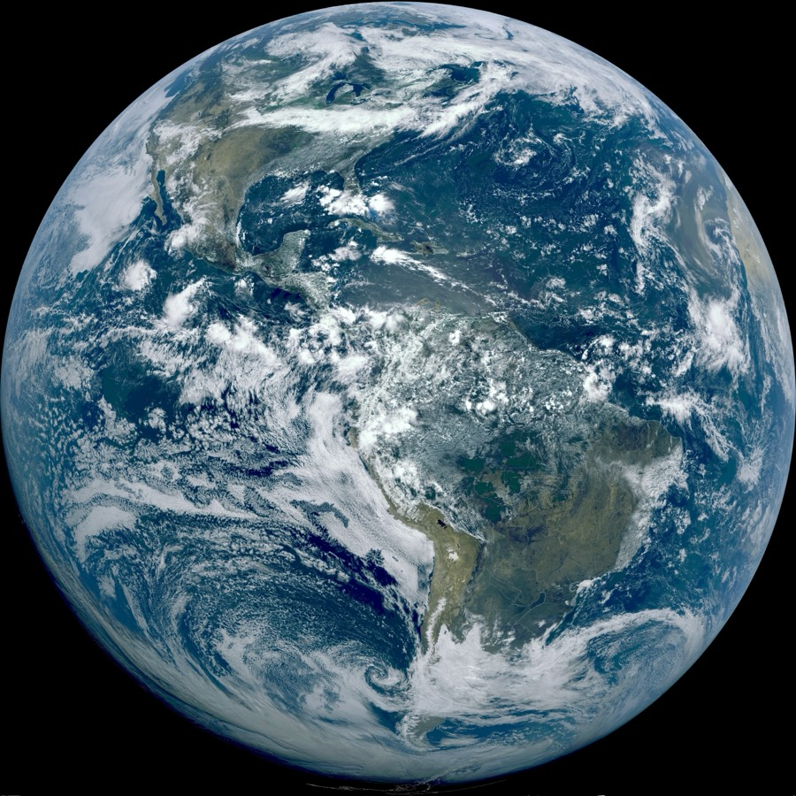

Executive Summary
AI 날씨 모델은 며칠 앞 예보에서 수십 년간 다듬어진 물리 모델을 이미 앞질렀다. 그런데 같은 모델이 몇 달에서 몇 년에 걸쳐 천천히 반복되는 기후의 리듬 앞에서는 번번이 무너진다. 흔히 이 실패를 "아직 정확도가 부족해서"로 읽는다. 이 리포트는 다르게 본다. 문제는 정확도가 아니라 학습이 시간을 어떻게 표본(sample)하느냐다. 무엇을 배울 수 있고 무엇을 영영 못 배우는지를 가르는 것은 파라미터 수도, 데이터의 양도 아닌, 학습 신호가 시간을 잘라내는 방식이다.
데이터 기반 날씨 모델은 몇 시간 간격의 상태를 이어붙이며 다음 상태를 맞히도록 학습한다. 이 간격은 흔히 6시간으로 알려졌지만 모델마다 다르다. 더 결정적인 것은 학습 도중 손실 함수가 실제로 펼쳐 보는 시간이 길어야 며칠에 그친다는 점이다. 여섯 개 대표 모델을 뜯어 보면 가장 관대한 기준조차 5일이다. 그 결과 준2년 주기 진동이나 엘니뇨처럼 몇 달에서 몇 년을 주기로 숨 쉬는 저주파 신호는 학습 신호 안에 단 한 번도 온전히 들어오지 않는다.
이 원리는 날씨에만 갇히지 않는다. 시계열과 센서, 운영 로그로 예측 모델을 만드는 모든 곳에서, 데이터를 얼마나 촘촘히 그리고 얼마나 길게 표본했는가가 모델이 배울 수 있는 주기의 상한을 미리 정해 둔다. 페블러스의 관점에서 데이터 품질은 결측과 노이즈 같은 정적 차원을 넘어 시간 표본 구조라는 동적 차원을 품어야 한다. 이 글은 AI 예보가 이긴 것과 못 배우는 것을 가르는 경계가 결국 데이터의 구조에 있음을 여섯 모델의 학습 절차로 짚는다.
~90%
단기 예보에서 AI가 물리 모델을 앞선 비율
GraphCast의 변수·리드타임 조합 대 ECMWF HRES
5일
학습 손실이 실제로 펼쳐 보는 가장 긴 시간
여섯 모델 중 최장 사례(NeuralGCM)
~170배
가장 가까운 저주파 리듬이 그 학습 창 밖에 있는 거리
QBO 28개월 대 5일 (6시간 스텝 기준 ~3,400배)
~1/3
30년 장기 시뮬레이션 중 불안정화한 비율
안정성이 곧 리듬 학습은 아님(NeuralGCM 계열)
어제의 질문, 오늘의 질문
바로 하루 전, 우리는 이 블로그에서 AI 날씨 모델이 20년 전 기후로 미래를 예보한다는 글을 냈다. 거기서 던진 질문은 "모델이 무엇을 학습했는가"였다. 학습 데이터의 분포가 과거에 치우쳐 있으면, 아무리 정교한 모델이라도 그 낡은 기후를 미래에 겹쳐 놓는다는 이야기였다. 오늘 글은 그 질문을 한 칸 아래로 내린다. 무엇을 학습했는가가 아니라, 학습이 시간을 어떻게 표본했는가를 본다.
두 질문은 닮았지만 다른 층위에 있다. 앞의 글이 데이터의 내용이 낡았다는 이야기라면, 이 글은 데이터를 시간으로 잘라내는 방식 자체가 무엇을 배울 수 있는지를 결정한다는 이야기다. 같은 실패를 만드는 서로 다른 원인 층위다. 겹치는 현상(준2년 진동이나 남반구 환상모드 같은 저주파 변동의 재현 실패)은 앞 글에서 이미 자세히 다뤘으니, 여기서는 다시 서술하지 않고 링크로 넘긴다. 대신 그 실패가 왜 정확도 튜닝으로는 좁혀지지 않는 구조적 한계인지, 학습 절차의 시간 구조에서 답을 찾는다.

이 글이 더하는 한 문장은 이것이다. 학습 신호가 표본하지 못한 시간 스케일은, 파라미터를 아무리 늘려도 원리적으로 배울 수 없다. 데이터 품질에는 결측·노이즈 같은 정적 차원만 있는 게 아니라, 간격과 창 길이와 커버리지라는 시간 축이 있다.
며칠은 이기고 몇 년은 진다
AI 날씨 모델의 단기 우위는 정량적으로 확인된 현실이다. 구글 딥마인드의 GraphCast는 유럽중기예보센터(ECMWF)의 고해상도 물리 모델 HRES와 견줘 변수와 리드타임 조합의 약 90%에서 더 정확했고, 500hPa 지위고도 같은 핵심 변수의 예보 스킬을 7~14% 끌어올렸다. 확산 기반 앙상블 모델 GenCast는 ECMWF의 앙상블 예보 대비 검증 대상의 97% 이상에서 우위를 보였다. 며칠 규모의 예보에서 AI가 이겼다는 말은 과장이 아니다.
그런데 같은 모델을 2주 너머로 밀면 이야기가 뒤집힌다. 예보 스킬은 기후값(climatology), 즉 "그냥 계절 평균으로 찍기"보다도 아래로 떨어진다. ECMWF조차 15일에서 두 달 사이 구간의 정확도가 급격히 낮아진다고 공식적으로 인정한다. 그리고 준2년 진동(QBO)이나 남반구 환상모드(SAM) 같은 저주파 변동에 이르면, 성공률을 숫자로 매기는 것조차 무의미해진다. 재현 자체가 실패로 판정되기 때문이다. 아래 개념도는 리드타임이 길어질수록 AI의 우위가 어떻게 반전되는지를 요약한 것이다.
한 가지는 정직하게 덧붙여야 한다. "AI가 전 변수에서 압승"은 아니다. 2미터 기온 같은 일부 변수는 단기에서도 우위가 0에 수렴하고, S2S(준계절) 구간에서 유일하게 뚜렷한 개선을 보인 사례는 FuXi-S2S가 매든-줄리안 진동(MJO)의 예측 가능 기간을 30일에서 36일로 늘린 정도다. 요컨대 비대칭은 실재하며, 단기에는 압승하고 저주파에서는 붕괴한다. 왜 이런 비대칭이 생기는지가 다음 두 섹션의 주제다.
학습의 눈금과 창
데이터 기반 날씨 모델은 대부분 자기회귀(autoregressive) 방식으로 학습한다. 어느 시점의 대기 상태를 입력받아 몇 시간 뒤 상태를 예측하고, 그 예측을 다시 입력으로 넣어 다음을 예측하는 식으로 이어붙인다. 여기에는 두 개의 서로 다른 시간 눈금이 있다. 하나는 스텝 간격(Δt), 즉 한 걸음이 몇 시간을 건너뛰는가다. 다른 하나는, 그리고 더 중요한 것은 학습 롤아웃 길이, 즉 학습 도중 손실 함수가 실제로 몇 걸음까지 펼쳐 보며 오차를 계산하는가다.
흔히 "6시간"이 AI 날씨 모델의 표준 간격처럼 이야기되지만, 여섯 개 대표 모델을 실제로 열어 보면 6시간은 대표값일 뿐 보편 상수가 아니다. GenCast는 12시간 스텝을 쓰고, Pangu-Weather는 1·3·6·24시간짜리 네 모델을 계층적으로 조합하며, NeuralGCM은 이산 스텝이 아니라 연속시간 하이브리드 적분을 쓴다. 공통점은 "6시간"이라는 특정 숫자가 아니라 "수 시간에서 하루 단위의 짧은 스텝"이라는 구조다. 아래 표는 여섯 모델의 학습 간격과, 학습 손실이 실제로 펼쳐 보는 최장 창을 나란히 정리한 것이다.
| 모델 | 학습 Δt | 학습 시 최장 롤아웃 (손실이 보는 창) |
설계 |
|---|---|---|---|
| FourCastNet Pathak 2022 |
6시간 | 2스텝 = 12시간 | 순수 자기회귀(AFNO) |
| Pangu-Weather Bi 2023, Nature |
1·3·6·24시간 (4모델) |
단일 스텝(최대 24h) | 계층적 시간 집계 |
| GraphCast Lam 2023, Science |
6시간 | 12스텝 = 3일 | 자기회귀 GNN |
| GenCast Price 2024, Nature |
12시간 | 단일 스텝(확산 디노이징) | 조건부 확산 자기회귀 |
| ACE2 Watt-Meyer 2025 |
6시간 | 2스텝 = 12시간 | 데이터 기반 SFNO (81년+ 안정 롤아웃) |
| NeuralGCM Kochkov 2024, Nature |
6시간→점증 | 최대 5일 | 하이브리드 (동역학 코어 + 학습 물리) |
이 표에서 가장 중요한 것은 세 번째 열이다. 여섯 모델 중 학습 손실이 실제로 펼쳐 보는 가장 긴 시간은 NeuralGCM의 5일에 그친다. 나머지는 12시간에서 3일 사이다. 이 말은, 학습이 오차를 계산하며 "여기까지는 맞혀 봐"라고 요구하는 최대 지평이 아무리 길어도 닷새라는 뜻이다. 며칠짜리 창으로는 몇 달에서 몇 년을 주기로 도는 신호가 손실 함수에 한 번도 온전히 들어오지 않는다. 아래 그림은 학습 창의 길이(파란 회색 막대들)와 저주파 리듬의 주기(오렌지 점들)를 같은 로그 시간축 위에 올려 그 간극을 보여준다.
표본이 정하는 상한
여기서 표본화의 논리를 조심스럽게 짚을 필요가 있다. 신호 처리에는 관측 창이 어떤 주기보다 짧으면 그 주기를 온전히 식별할 수 없다는 오래된 직관이 있다. 나이퀴스트-섀넌 표본화 정리가 그 대표다. 다만 대기 모델의 자기회귀 학습에 이 정리를 그대로 적용해 "증명됐다"고 말하는 것은 정확하지 않다. 정리는 균일 표본과 대역제한 신호를 전제로 하고, 대기 시스템은 비선형이고 다중 스케일이기 때문이다. 그래서 이 글은 단정하지 않는다. 표본화 논리는 학습 가능한 시간 스케일의 상한을 시사할 뿐, 증명하지는 않는다. 그 방향으로 이해하는 것이 정직하다.
그럼에도 방향은 분명하다. 학습 손실이 며칠짜리 창만 본다면, 그 창 안에서 여러 번 진동하는 고주파 현상은 학습 신호에 풍부하게 담긴다. 반대로 창보다 훨씬 긴 주기로 도는 저주파 현상은 창 안에서는 거의 평평한 추세로만 보인다. 리듬으로 인식될 재료가 애초에 들어오지 않는 것이다. 아래 그림은 같은 며칠짜리 창 안에서 빠른 파동과 느린 파동이 각각 어떻게 보이는지를 대비한 개념도다.
여기에 실무적 이유가 두 겹 더 얹힌다. 첫째, 오차 누적이다. 자기회귀 롤아웃을 길게 돌릴수록 한 걸음의 작은 오차가 다음 걸음의 입력으로 되먹여져 눈덩이처럼 커진다. 그래서 학습을 며칠 이상으로 늘리기가 기술적으로 어렵다. 둘째, 과평활(over-smoothing)과 스펙트럼 편향이다. 오차를 줄이려는 압력이 모델을 점점 뭉툭한 평균값 쪽으로 끌고 가서, 날카로운 극단과 미세한 변동을 깎아낸다. 이 두 가지가 겹치면 긴 시간 통계를 재현하는 능력은 더 떨어진다. 결국 저주파를 배우려면 창을 늘려야 하는데, 창을 늘리면 학습이 무너지는 딜레마가 생긴다.
그 간극이 실제로 얼마나 벌어져 있는지는 숫자로 늘어놓으면 더 분명해진다. 아래 표는 대표적인 저주파 모드들의 주기를 가장 관대한 학습 창인 5일로 나눈 어림값이다. 학습에 가장 가까이 붙어 있는 준2년 진동조차 그 창의 약 170배 밖에 있고, 태평양과 대서양의 십년~수십 년 변동에 이르면 거리는 수천 배로 벌어진다. 정확도를 몇 퍼센트 끌어올리는 튜닝으로는 결코 건널 수 없는, 자릿수 단위의 거리다. "정확도로는 좁혀지지 않는 구조적 한계"라는 말을 숫자로 확인한 셈이다.
| 저주파 모드 | 대표 주기 | 5일 학습 창 대비 |
|---|---|---|
| QBO 준2년 진동 | ~28개월 | 약 170배 |
| ENSO 엘니뇨-남방진동 | 2~7년 (불규칙) | 약 146~511배 |
| PDO 태평양 십년 변동 | 20~30년 (대표값) | 약 1,825배 |
| AMO 대서양 다십년 변동 | ~60~80년 (추정) | 약 4,380배 |
| SAM 남반구 환상모드 | 다층 시간스케일 | 지속성 ~10일부터 경년 성분까지 |
주: 배수는 각 주기를 최장 학습 창 5일로 나눈 어림값이다. SAM은 단일 주기로 단정할 수 없어 다층 시간스케일로 표기했다. PDO·AMO의 주기는 문헌 편차가 있어 대표값·추정치로 병기했다.
넘으려는 시도들
이 한계가 알려진 이상, 연구자들이 손을 놓고 있을 리 없다. 접근은 크게 두 방향이다. 하나는 안정적으로 아주 오래 도는 모델을 만드는 것이고, 다른 하나는 물리 법칙을 학습에 결합하는 하이브리드다. 그런데 이 시도들이 드러낸 사실 하나가 이 리포트의 핵심 반전이다. 오래 안정적으로 도는 것과 그 안의 느린 리듬을 배우는 것은 별개다.
5.1안정성은 리듬 학습을 보장하지 않는다
ACE2는 순수 데이터 기반 모델이면서도 81년(후속 변형은 수천 년)을 발산 없이 자기회귀로 돌 수 있다. 대단한 안정성이다. 그런데 그렇게 오래 도는 ACE2조차 QBO와 SAM의 저주파 거동은 재현하지 못한다. 하이브리드 모델인 NeuralGCM은 물리 코어를 결합해 장기 통계를 크게 개선했지만, 30년 시뮬레이션 중 약 3분의 1이 도중에 불안정화한다. 안정성과 리듬 학습이 같은 것이라면 있을 수 없는 조합이다. 오래 버틴다가 곧 느린 주기를 배웠다를 뜻하지 않는다는 증거다.

한 벤치마크 연구(Baxter 외, 2026)는 이 모델들의 저주파 거동을 두고 "QBO의 느린 하강과 환상모드의 극지 이동이 재현되지 않고, 간헐적이고 때로 기괴한 거동을 보인다"고 서술한다. 같은 학술지의 논평(Scaife, 2026)은 이를 물리 모델이 20여 년 전 QBO를 처음 재현하기 시작하던 초기 단계에 비유한다. 지금 AI 모델은 저주파에 관한 한 그 초입에 서 있다는 진단이다.
5.2경계선이 세대를 바꿔도 움직이지 않았다
주목할 것은 이 경계가 특정 모델의 결함이 아니라는 점이다. FourCastNet 세대에서 GraphCast·GenCast 세대로, 다시 ACE2·NeuralGCM 하이브리드 세대로 아키텍처를 근본적으로 바꿔도 "단기 정복, 저주파 미해결"의 경계는 거의 그대로다. 문제가 어느 한 모델의 버그였다면 세대가 바뀌며 사라졌어야 한다. 경계선이 버틴다는 것은, 원인이 공통 구조, 곧 학습 신호의 시간 구조에 있음을 강하게 시사한다.
5.3업계는 물리와 AI를 섞고 있다
현재성 앵커로 미국 해양대기청(NOAA)의 최근 배치를 보자. NOAA의 AI 기반 글로벌 모델 AIGFS는 16일 예보를 기존 GFS 대비 약 0.3%의 컴퓨팅 자원과 40분 안에 생성한다. 앙상블 버전 AIGEFS는 9% 자원으로 예보 시계를 18~24시간 늘렸다. 다만 이 연장은 저주파를 배웠다는 뜻이 아니라 단기 앙상블 효율이 좋아졌다는 뜻이니 혼동하지 말아야 한다. 눈여겨볼 것은 NOAA가 물리 31 멤버와 AI 31 멤버를 합친 62 멤버 하이브리드 앙상블(HGEFS)로 간다는 방향이다. 순수 AI로 전부 대체하지 않고 물리와 섞는 이 선택 자체가, 현장이 AI의 시간 해상도 한계를 실무적으로 인지하고 있다는 신호다.
데이터 품질의 시간 축
이 논리는 날씨를 벗어나도 그대로 반복된다. 자기회귀 학습, 짧은 스텝, 며칠짜리 롤아웃이라는 조건은 날씨 모델만의 특수 사정이 아니다. 시계열 예측을 하는 어떤 모델이든, 데이터를 얼마나 촘촘히(해상도) 그리고 얼마나 길게(창 길이) 표본했는가에서 배울 수 있는 주기의 상한이 이미 갈린다. 산업 설비의 센서 로그, 운영 지표, 수요 시계열, 물리 시뮬레이션 데이터가 모두 같은 논리 위에 있다.
이것이 데이터 품질을 보는 시야를 넓힌다. 우리는 오랫동안 데이터 품질을 정확도·결측·노이즈 같은 정적 차원으로 이해해 왔다. 그런데 예측 모델의 학습 가능성이라는 관점에서 보면, 품질에는 시간 축이라는 동적 차원이 있다. 표본 간격이 얼마인가, 관측 창이 얼마나 긴가, 시간 커버리지가 어느 대역까지 닿는가. 이 세 가지가 모델이 무엇을 배울 수 있고 무엇을 못 배우는지를 결정한다. 저주파·계절성·장주기 패턴을 학습시키려면, 정확도를 튜닝하기 이전에 데이터 설계 단계에서 시간 축부터 봐야 한다는 실무 원칙이 여기서 나온다.
모델이 무엇을 배울 수 있는지는 파라미터나 데이터 양이 아니라 데이터의 시간 구조가 먼저 정한다. 정확도 경쟁으로 좁혀지지 않는 이 상한을 인정하는 것이, 예측 모델을 만드는 모든 현장에서 헛된 튜닝을 줄이는 출발점이다. 학습 가능성(learnability)은 튜닝의 문제가 아니라 표본 설계의 문제다.
AI 날씨 모델이 며칠 앞을 물리 모델보다 잘 맞히게 된 것은 분명한 성취다. 동시에 몇 년의 리듬을 끝내 못 배우는 것도 분명한 한계다. 그 성취와 한계를 가르는 선은 모델의 영리함이 아니라, 학습 데이터가 시간을 어떻게 표본했는가에 있다. 이긴 것과 못 배우는 것을 나누는 진짜 경계는, 결국 데이터의 구조다.
Editor's Note. 이 리포트가 짚은 시간 표본 구조는 페블러스가 데이터 품질을 진단할 때 다루는 축과 맞닿아 있다. 결측·노이즈 같은 정적 신호뿐 아니라 시간 해상도·커버리지 같은 동적 신호까지 품는 것이 AI-Ready Data의 방향이라고 우리는 본다. 다만 이 글의 결론은 특정 제품 주장이 아니라, 예측 모델을 만드는 누구에게나 적용되는 원리다.
참고문헌
학술 논문 (모델·벤치마크)
- 1.Pathak, J., et al. (2022). FourCastNet: A Global Data-driven High-resolution Weather Model using Adaptive Fourier Neural Operators. arXiv: 2202.11214.
- 2.Bi, K., et al. (2023). Accurate medium-range global weather forecasting with 3D neural networks (Pangu-Weather). Nature. arXiv: 2211.02556.
- 3.Lam, R., et al. (2023). GraphCast: Learning skillful medium-range global weather forecasting. Science. arXiv: 2212.12794.
- 4.Price, I., et al. (2024/2025). Probabilistic weather forecasting with machine learning (GenCast). Nature. arXiv: 2312.15796.
- 5.Watt-Meyer, O., et al. (2025). ACE2: Accurately learning subseasonal to decadal atmospheric variability and forced responses. npj Climate and Atmospheric Science. arXiv: 2411.11268.
- 6.Kochkov, D., et al. (2024). Neural general circulation models for weather and climate (NeuralGCM). Nature. doi: 10.1038/s41586-024-07744-y. arXiv: 2311.07222.
- 7.Baxter, S., et al. (2026). Benchmarking atmospheric circulation variability in ACE2 and NeuralGCM. Geophysical Research Letters. doi: 10.1029/2025GL119877.
- 8.Scaife, A. A. (2026). Successes and Failures of Current AI Climate Models. Geophysical Research Letters. doi: 10.1029/2026GL122615.
- 9.Chen, L., et al. (2024). A machine learning model that outperforms conventional global subseasonal forecast models (FuXi-S2S). Nature Communications. doi: 10.1038/s41467-024-50714-1.
- 10.Ling, F., et al. (2024). FengWu-W2S: A deep learning model for seamless weather-to-subseasonal forecast of global atmosphere. arXiv: 2411.10191.
- 11.Li, G., et al. (2025). TianQuan-S2S: A Subseasonal-to-Seasonal Global Weather Model via Incorporate Climatology State. arXiv: 2504.09940.
정책·기관·통계
- 12.NOAA (2025). NOAA deploys new generation of AI-driven global weather models. noaa.gov 보도자료.
- 13.ECMWF (2025). AI Weather Quest: Advancing sub-seasonal forecasting with AI/ML. ecmwf.int Newsletter #183.
- 14.Climate Data Guide (NCAR). The Quasi-Biennial Oscillation (QBO). climatedataguide.ucar.edu.
- 15.Baldwin, M. P., et al. (2001). The Quasi-Biennial Oscillation. Reviews of Geophysics. (QBO 배경)
페블러스 인접
- 16.페블러스 블로그 (2026-07-08). AI 날씨 모델이 20년 전 기후로 미래를 예보한다. blog.pebblous.ai. (선행 글 — 분포 축)
주: 시간 스케일 간극의 배수(약 170배, 약 3,400배 등)는 각 저주파 주기를 학습 창 또는 스텝 간격으로 나눈 파생 계산으로, 원 수치를 조합한 어림값이다. 저주파 재현의 성공률을 수치로 제시하지 않은 것은 원 벤치마크가 단일 스킬 점수 대신 정성적 판정을 쓰기 때문이다.